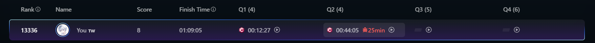

Biweekly Contest 174
第一次打 LeetCode 的 contest，晚上 10 點半準時參加比賽，不知道在緊張什麼，主要是第一次打線上比賽，知道有時間壓力，所以不敢大意。
這次第一題寫寫條件就好，所以沒有太難，花了十幾分鐘做出來，一次就過測資，之後送出就 AC，我自己都有點嚇到 w。
第二題題目理解有點複雜，但我有個特別的想法，所以就試試看，沒想到過了 996 個測資卻 TLE，當下真的傻眼，只好換一種方式做。後來開 array 存 bool 就過了。後面兩題可能是要用演算法，還沒學太多，所以不會就直接放棄了 😄😄
（小插曲：我 TLE 之後小改陸續送出了好幾次，後來才知道沒過會有加時懲罰，所以大虧。）

最後是拿到 8 分，以第一次比賽來說我已經很滿足了，但演算法還是大問題，之後再慢慢加油 💪
看到排行榜一堆不到 5 分鐘就做對一題的真的太誇張，不知道怎麼做到的……
最後附上我自己當時的解題紀錄